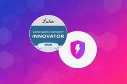
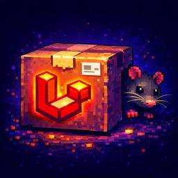
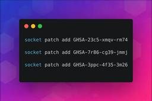

Socket
フィード
Fake imToken Chrome Extension Steals Seed Phrases via Phishing Redirects
Socket
Mixed-script homoglyphs and a lookalike domain mimic imToken’s import flow to capture mnemonics and private keys.
2日前

Socket Named a Supply Chain Innovator in Latio's 2026 Application Security Market Report
Socket
Latio’s 2026 report recognizes Socket as a Supply Chain Innovator and highlights our work in 0-day malware detection, SCA, and auto-patching.
3日前
Meet the Socket Team at RSAC and BSidesSF 2026
Socket
Join Socket for live demos, rooftop happy hours, and one-on-one meetings during BSidesSF and RSA 2026 in San Francisco.
4日前

Malicious Packagist Packages Disguised as Laravel Utilities Deploy Encrypted RAT
Socket
Malicious Packagist packages disguised as Laravel utilities install an encrypted PHP RAT via Composer dependencies, enabling remote access and C2 callbacks.
5日前
Unauthorized AI Agent Execution Code Published to OpenVSX in Aqua Trivy VS Code Extension
Socket
OpenVSX releases of Aqua Trivy 1.8.12 and 1.8.13 contained injected natural-language prompts that abuse local AI coding agents for system inspection and potential data exfiltration.
6日前

minimatch Patches 3 High-Severity ReDoS Vulnerabilities
Socket
minimatch patched three high-severity ReDoS vulnerabilities that can stall the Node.js event loop, and Socket has released free certified patches.
7日前

StegaBin: 26 Malicious npm Packages Use Pastebin Steganography to Deploy Multi-Stage Credential Stealer
Socket
Socket uncovered 26 malicious npm packages tied to North Korea's Contagious Interview campaign, retrieving a live 9-module infostealer and RAT from the adversary's C2.
9日前
Malicious Go “crypto” Module Steals Passwords and Deploys Rekoobe Backdoor
Socket
An impersonated golang.org/x/crypto clone exfiltrates passwords, executes a remote shell stager, and delivers a Rekoobe backdoor on Linux.
9日前
npm Introduces minimumReleaseAge and Bulk OIDC Configuration
Socket
npm rolls out a package release cooldown and scalable trusted publishing updates as ecosystem adoption of install safeguards grows.
10日前
Risky Biz Podcast: Open Source Risk Is Compounding as AI Agents Write 90% of New Code
Socket
AI agents are writing more code than ever, and that's creating new supply chain risks. Feross joins the Risky Business Podcast to break down what that means for open source security.
11日前